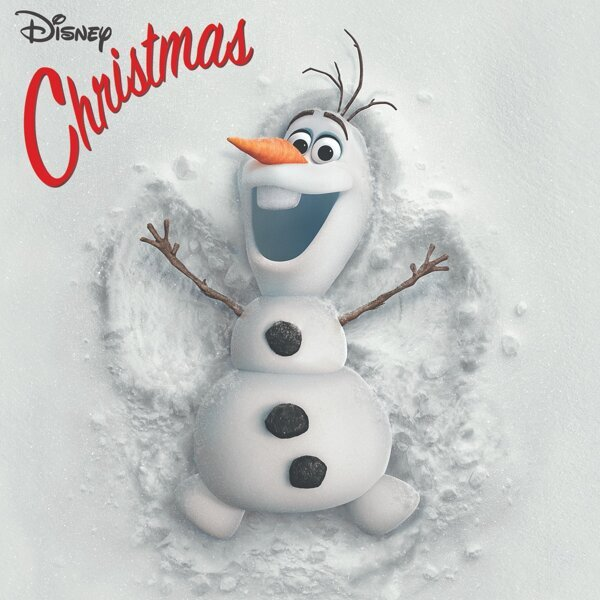
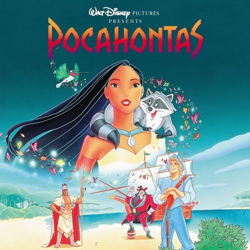

The snow glows white on the mountain tonight
Not a footprint to be seen
A kingdom of isolation and it looks like I’m the queen
The wind is howling like this swirling storm inside
Couldn’t keep it in, heaven knows I tried
Don’t let them in, don’t let them see
Be the good girl you always have to be
Conceal, don’t feel, don’t let them know
Well now they know
Let it go, let it go
Can’t hold it back anymore
Let it go, let it go
Turn away and slam the door
I don’t care what they’re going to say
Let the storm rage on
The cold never bothered me anyway.
It’s funny how some distance
Makes everything seems small
And the fears that once controlled me
Can’t get to me at all
It’s time to see what I can do
To test the limits and break through
No right, no wrong, no rules for me,
I’m free
Let it go, let it go
I am one with the wind and sky
Let it go, let it go,
You’ll never see me cry
Here I stand and Here I’ll stay
Let the storm rage on…
My power flurries through the air into the ground
My soul is spiraling in frozen fractals all around
And one thought crystallizes like an icy blast
I’m never going back
The past is in the past
Let it go, let it go
And I’ll rise like the break of dawn
Let it go, let it go
That perfect girl is gone
Here I stand in the light of day
Let the storm rage on
The cold never bothered me anyway
Do You Want to Build a Snowman?

Agatha Lee Monn, Katie Lopez, Kristen Bell
Elsa?
Do you want to build a snowman?
Come on let's go and play
I never see you anymore
Come out the door,
It's like you've gone away
We used to be best buddies
And now we're not
I wish you would tell me why
Do you want to build a snowman?
It doesn't have to be a Snowman
Go away, Anna
Okay, bye
Do you want to build a snowman
or ride our bike around the halls?
I think some company is overdue
I've started talking to the pictures on the walls
(Hang in there, Joan!)
It gets a little lonely,
All these empty rooms,
Just watching the hours tick by
(tick-tock tick-tock tick-tock tick-tock)
Elsa?
Please, I know you're in there,
People are asking where you've been,
They say "have courage";
And I'm trying to,
I'm right out here for you
Just let me in
We only have each other
It's just you and me
What are we gonna do?
Do you want to build a snowman?
Never Too Late
Elton John
作詞：Elton John, Tim Rice & Lebo M 作曲：Elton John, Tim Rice & Lebo M
It's never too late to turn things around
Recover, unravel the path to confound
The doubters and losers that line up despair
Will tell you it's over, you're going nowhere
It's never too late, I hope
It's never too late
It's never too late to get back on track
To get at least some, if not all of it back
I thought I was happy, and sometimes I was
The sadness is just as important because
Got to carry the weight and hope
It's never too late
Never too late to fight the fight
Never too late to keep the night
Never too late to win the day
Never too late to break away
Time will start to move too fast, the time is now, my friends
I'm a long way from the start, but further from the end
Oh no, it's never too late
It's never too late to get up off the ground
Don't have to be noticed, don't have to crowned
I get what I done and I don't try to hide
I lost many things, but never my pride
It's never too late, I know
It's never too late
Never too late to fight the fight
Never too late to keep the night
Never too late to win the day
Never too late to break away
Time will start to move too fast, the time is now, my friends
I'm a long way from the start, but further from the end
Oh no, it's never too late
I used to say I don't have time, I'm sleepin' tonight
A day doin' nothin' is doin' it right
No hurry, no hurry, take as long as it takes
You might as well sleep for all the difference it makes
I didn't find love or the peace or the breaks
These aren't excuses, but a string of mistakes
I won't go back there, not goin' back there
Never too late to fight the fight
Never too late to keep the night
Never too late to win the day
Never too late to break away
Never too late to fight the fight, babe
Never too late to keep the night
Never too late to win the day
Never too late to break away
Time will start to move too fast, the time is now, my friends
I'm a long way from the start, but further from the end
Oh no, it's never too late
It's never too late
Oh, it's never too late
It's never too late
It's never too late
Colors Of The Wind - End Title

Vanessa Williams
You think you own whatever land you land on
The earth is just a dead thing you can claim
But I know every rock and tree and creature
Has a life, has a spirit, has a name
You think the only people who are people
Are the people who look and think like you
But if you walk the footsteps of a stranger
You'll learn things you never knew you never knew
Have you ever heard the wolf cry to the blue corn moon
Or asked the grinning bobcat why he grinned?
Can you sing with all the voices of the mountain?
Can you paint with all the colors of the wind?
Can you paint with all the colors of the wind?
Come run the hidden pine trails of the forest
Come taste the sun-sweet berries of the earth
Come roll in all the riches all around you
And for once, never wonder what they're worth
The rainstorm and the river are my brothers
The heron and the otter are my friends
And we are all connected to each other
In a circle, in a hoop that never ends
Have you ever heard the wolf cry to the blue corn moon
Or let the eagle tell you where he's been
Can you sing with all the voices of the mountain?
Can you paint with all the colors of the wind?
Can you paint with all the colors of the wind?
How high does the sycamore grow?
If you cut it down, then you'll never know
And you'll never hear the wolf cry to the blue corn moon
For whether we are white or copper skinned
We need to sing with all the voices of the mountain
We need to paint with all the colors of the wind
You can own the earth and still
All you'll own is earth until